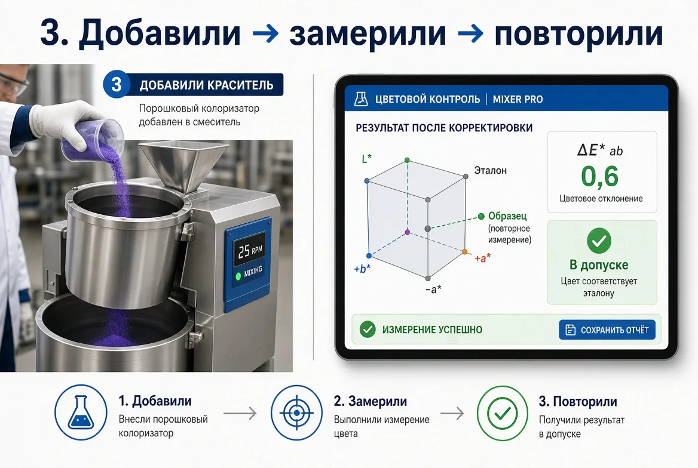
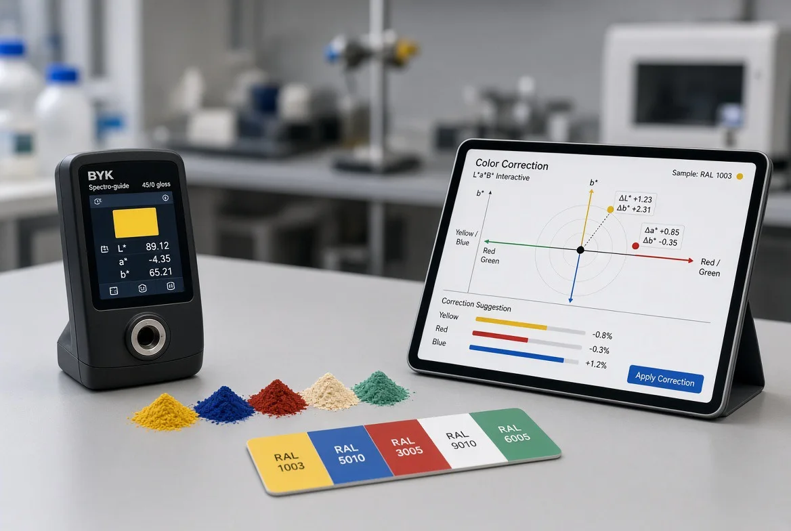
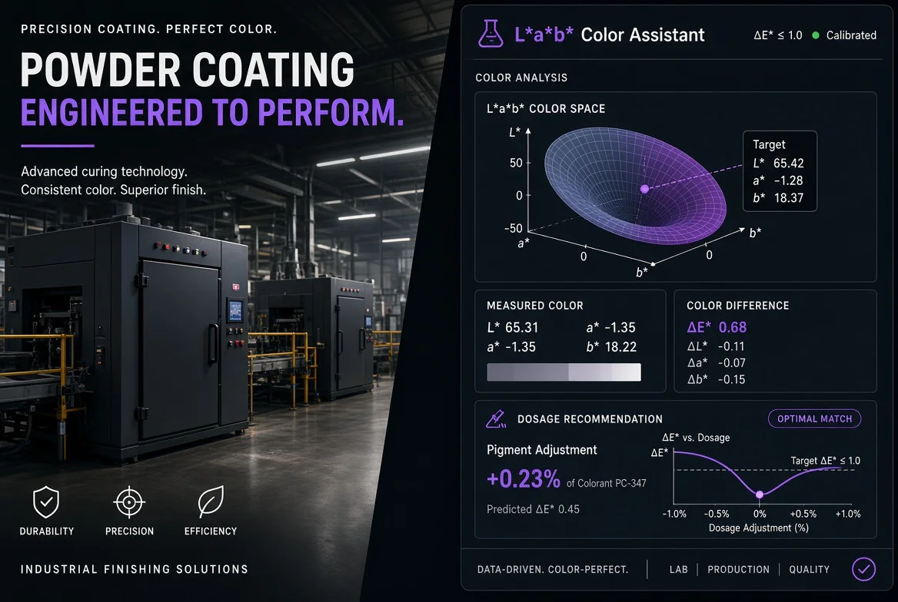
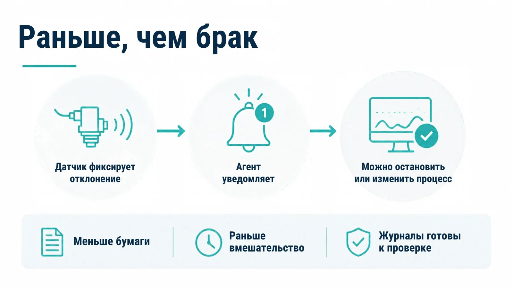
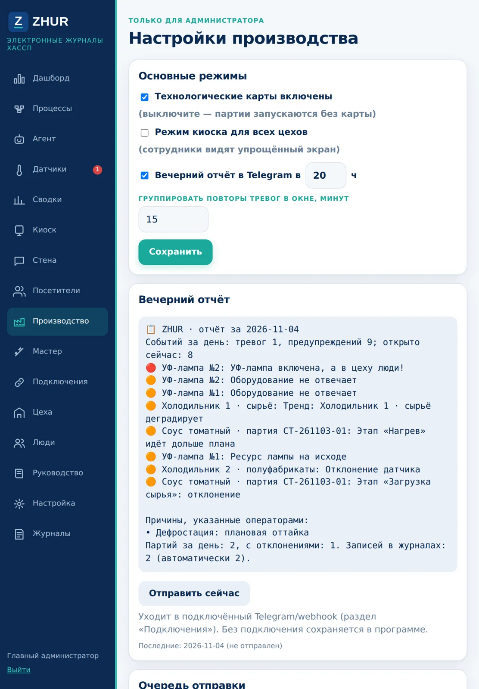

Какой колорант добавить — и сколько процентов
Технолог замеряет эталон и образец спектрофотометром. Система показывает на графике, куда сместился цвет, и подсказывает коррекцию. Попробуйте справа: возьмите точку и сдвиньте её.
Демонстрация принципа: коэффициенты учебные. В рабочей версии дозировка считается по вашей базе колорантов, вашему прибору и вашей рецептуре.
Как это работает: четыре шага
От замера до подтверждённого результата. Технологу не нужно считать в уме: он видит цвет, график и готовую подсказку.
Замер эталона и образца
Прибор снимает эталон, затем образец порошковой краски. Эталон встаёт в центр графика, а точка образца показывает, в какую сторону цвет ушёл: к жёлтому или синему, к красному или зелёному, светлее или темнее.

Показать пальцем на графике
На планшете график a*b* крупный и наглядный. Технолог касается точки или двигает её, и сразу видит направление и величину отклонения. Это ускоряет понимание: не таблица цифр, а картинка.

Рекомендация: что и сколько
Система показывает колорант и дозировку, например «жёлтый 0,35%». Шаг дозы очень мелкий, от 0,0001%, и при необходимости до 100% и выше. Для каждого колоранта учитывается влияние на цвет и на яркость.

Добавили, замерили, повторили
После добавления колоранта в смеситель делается повторный замер. Если ΔE*ab в допуске, цвет соответствует эталону и отчёт сохраняется. Если нет, цикл повторяется с уточнённой дозой.

Как читать график L*a*b*
Три оси описывают любой цвет. Эталон всегда в центре, а образец показывает, куда он сместился.
+b*. Образец жёлтее эталона. Чтобы вернуть цвет, нужен синий колорант или меньше жёлтого.
−b*. Образец синее эталона. Чтобы вернуть цвет, нужен жёлтый колорант.
−a*. Образец зеленее эталона. Чтобы вернуть цвет, нужен красный колорант.
+a*. Образец краснее эталона. Чтобы вернуть цвет, нужен зелёный колорант.
Образец светлее эталона: добавляется тёмный колорант (чёрный).
Образец темнее эталона: добавляется светлый колорант (белый).
ΔE*ab — одно число, которое объединяет все три отклонения. Чем оно меньше, тем ближе образец к эталону. Допуск задаёт предприятие под свой продукт и заказчика.
Прибор, планшет и RAL в одной связке
Система проектируется под прибор класса BYK spectro-guide и под приборы, которые уже стоят у вас в лаборатории. Каталоги RAL подключены как цели для подбора.



Что получает технолог
Одно рабочее место у линии: замер, график, подсказка по колоранту, история правок. Меньше проб «на глаз», быстрее выход на цвет и меньше повторных переделок.
Что это даёт предприятию
Быстрее запуск
Цвет подбирается за меньшее число итераций, партия выходит на линию раньше.
Меньше брака
Отклонение видно в цифрах и на графике ещё до окраски изделий.
Экономия колоранта
Доза считается точно, а не «на глаз», поэтому меньше перерасхода и пересортицы.
Одинаковый результат
Разные технологи и смены работают по одной логике, а история замеров сохраняется.
Контроль производства и журналы
Вторая часть решения: контроль параметров, отклонения и журналы. Логика универсальная и изначально отработана на реальном производстве. Ниже скриншоты рабочей системы ZHUR, она адаптируется под любое предприятие.






Сроки и формат работы
Это не готовый «коробочный» продукт. Программа создаётся индивидуально: под ваши задачи, приборы, линии, базу колорантов и процессы.
Работаю с юридическими лицами (ООО, ИП и др.) по договору. Варианты: разработка под ключ или передача прав.